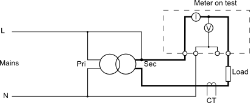

Hi, I hope this kind of question is allowed and also that there is some knowledgeable soul out there who can help with my question.
I am involved in testing electric meters and have set up a test rig to quickly attach each meter using a "bed of nails" type setup (only 3 "nails" needed). As a load I am simply using an oil filled radiator to check current flow is registered by the meter (this is a really simple test requirement - go/nogo test) and this is all working fine and acceptable.
Now for my question.
I have looked at commercially available test rigs, and they use a different method to load the meter. I believe they are using a phase shift of the current versus the voltage with some inductor configuration to achieve this. They are also able to simulate reverse current in addition to forward current by either a +ve or -ve phase shift.
I must have been off that week when this subject was covered as my knowledge does not seem to cover how this is achieved, at least not how to design a circuit to replicate this desired effect.
Is there anyone who can help with this?
Regards,
Ivan W
Re: Calling all AC theory specialists
Have you read Resources > Building Blocks? The basic a.c. theory of how phase shift and power relates is explained there to some extent.
But I'm not sure what you're asking. If you need to know only whether the meter "works" in the broadest sense, then you don't need to know about phase shifts, because most domestic meters respond to and register real power only. If you need to know whether a meter registers reverse power, just connect it backwards (i.e the load on the supply side and the supply on the load side).
Perhaps you need to spell out in a little more detail what you want to know.
Re: Calling all AC theory specialists
I have looked at commercially available test rigs, and they use a different method to load the meter. I believe they are using a phase shift of the current versus the voltage with some inductor configuration to achieve this.
Most accuracy class standards will have some requirement of accuracy at various non-unity power factor settings. There are some tables in this application note that wil give you some examples of what is required to meet some accuracy classes: http://www.satec-global.com/sites/default/files/ApplicationNote-Accuracy-Class-Dec2012.pdf
The commercial test rigs you found are probably set up to allow you to test compliance at those points. Do you need to confirm your own meters comply with those specs?
Re: Calling all AC theory specialists
Hi Robert,
thanks for the response.
Yes I only need to confirm that the meter registers current flow ("works" in the broadest sense).
The reasons for the phase questions are that if I can use a phase shift to "simulate" real power of say 10 or 15 amps forward and reverse I can
A. build a much smaller test rig (high power load resistors tend to be large) and
B. I can switch from forward to reverse current without the need to disconnect and reconnect the unit under test (thereby saving seconds of process time).
Thanks again
Re: Calling all AC theory specialists
The commercial test rigs you found are probably set up to allow you to test compliance at those points. Do you need to confirm your own meters comply with those specs?
Hi dBc,
thanks for the response.
No, only need to confirm that the meter registers current flow (i.e. the light flashes every x seconds).
Re: Calling all AC theory specialists
Is it possible to use a low voltage but high current (hence low power) in the meter's current sensing circuit but allow it to see the correct voltage? I test CTs using a 6.5 V, 50 VA transformer which, as I only go up to 5 A, means only 33 W dissipated in the load resistor. Another advantage if you can do that: a (low current) changeover switch in the transformer primary to reverse the phase would kid the meter into thinking it had reverse power flow.
Re: Calling all AC theory specialists
I was under the impression that the meters registered real power (in kWh) and that if i used a lower voltage but higher current I would still not achieve my objective (make the indicator flash faster)
The indicator flashes 1000 times per kWh so if I put a 2kW heater as a load it will flash about once every 4 seconds. If I lower the voltage I would need to increase the current proportionally to get the same flash rate.
I need to fool the meter into reading a higher real power than the actual - hence the phase shift (or at least that is what I think is the way others are doing it)
Re: Calling all AC theory specialists
A phase shift will actually lower the flash rate, assuming the meter measures Real Power/Energy.
If you've only got 3 nails in your bed-of-nails then I don't think it's possible to do any tricks with running the current at low voltages. I think you really will need a boatload of power moving around. If your meter had separate voltage and current inputs (more typically found on meters that use CTs to measure current) then you could run high currents at low voltages through the CT.
Re: Calling all AC theory specialists
You haven't got the concept, either of you. The transformer isn't being used for isolation, in fact you need to connect one side of the secondary to the primary side. Then the high secondary current circulates through the transformer secondary, meter and load, while the meter's voltage coil sees only the mains voltage.

I haven't drawn in the emonTx ac adapter, nor the changeover switch in the transformer primary to reverse the phase (hence to give exported energy), and be aware that everything, especially the right-hand side of the diagram, is live to mains.
Re: Calling all AC theory specialists
@Robert,
Neat! The circuit would come unstuck on some of the more modern electronic meters that check for a reverse Neutral current match to prevent a common cheating mechanism in some countries - but I doubt that applies here.
Re: Calling all AC theory specialists
If the neutral current is monitored too, you can extend the circuit to do the same thing in the neutral, at the cost of a second load and a second winding on the transformer. It might need some trimming to persuade the meter that the current is balanced.
Having checked the usual places, the hard part will be finding a transformer with a suitably low voltage, high current secondary or two.